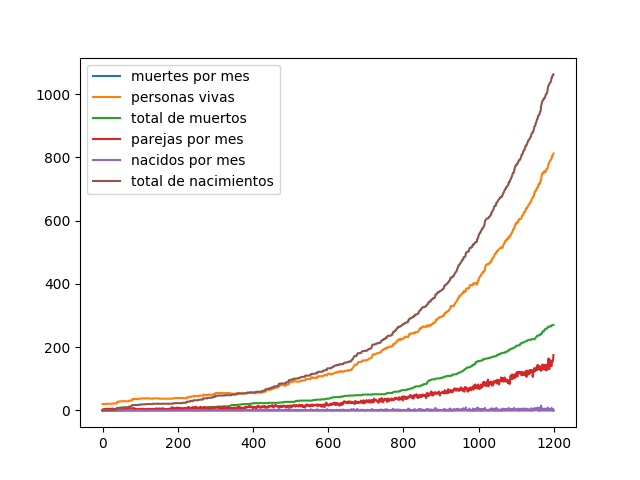
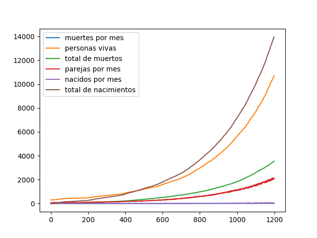

Informe Escrito
Autor
| Nombre y Apellidos | Grupo | Correo | GitHub |
|---|---|---|---|
| Ariel Plasencia Díaz | C-412 | a.plasencia@estudiantes.matcom.uh.cu | ArielXL |
Orientación del Problema
Se desea conocer la evolución de la población de una determinada región. Se conoce que la probabilidad de fallecer de una persona distribuye uniforme y se corresponde, según su edad y sexo, con la siguiente tabla:
| Edad | Hombre | Mujeres |
|---|---|---|
Del mismo modo, se conoce que la probabilidad de que una mujer se embarace es uniforme y está relacionada con la edad:
| Edad | Probabilidad de Embarazarse |
|---|---|
Para que una mujer quede embarazada debe tener pareja y no haber tenido el número máximo de hijos que deseaba tener ella o su pareja en ese momento. El número de hijos que cada persona desea tener distribuye uniforme según la tabla siguiente:
| Número de Hijos | Probabilidad |
|---|---|
Para que dos personas sean pareja deben estar solas en ese instante y deben desear tener pareja. El desear tener pareja está relacionado con la edad:
| Edad | Probabilidad de Querer Pareja |
|---|---|
Cuando dos personas están en pareja la probabilidad de que ocurra una ruptura distribuye uniforme y es de
| Edad | |
|---|---|
Cuando están dadas todas las condiciones y una mujer queda embarazada puede tener o no un embarazo múltiple y esto distribuye uniforme acorde a las probabilidades siguientes:
| Número de Bebés | Probabilidad |
|---|---|
La probabilidad del sexo de cada bebé nacido es uniforme
Principales Ideas Seguidas para la Solución del Problema
Para realizar la simulación deseada definimos objetos y procesos que describen nuestro problema. En nuestra simulación la unidad básica de tiempo es un mes, por lo que en cada mes de la simulación ejecutaremos los procesos definidos para que ejecuten los cambios necesarios en nuestros objetos. El programa consta de dos clases principales Person y Population, la primera engloba el estado de una persona de nuestro poblado (esta clase nunca es instanciada directamente sino a través de las clases Woman y Man que heredan de ella), y la segunda contiene todas las personas que conforman nuestro Poblado en Evolución. Durante cada mes de nuestra simulación ejecutaremos
Modelo de Simulación de Eventos Discretos
Para la modelación de nuestro problema creamos una clase llamada Person que engloba las características consideradas relevantes para nuestra simulación, tenemos también una clase Population que contiene a todas las personas de nuestra población y nos permite hacer acciones como añadir personas a nuestra población, saber la cantidad de personas vivas, iterar sobre las personas vivas de la población, entre otras.
Uno de los conceptos principales en nuestra simulación son los procesos que definimos para efectuar cambios sobre nuestra población, estos procesos son: envejecer, emparejar, morir, embarazar, dar a luz, romper parejas. A continuación analizamos cada uno de esos procesos.
Procesos
Envejecer
Este proceso se encarga de aumentar un mes en la edad de todas las personas vivas que pertenecen a la población.
Emparejar
Este proceso selecciona a todas las personas vivas que se encuentren solteras (esta búsqueda excluye también a las personas que están recuperándose de una ruptura o están de luto) y de éstas comprueban cuáles desean tener parejas, entre los que queden intenta emparejar hombre con mujeres teniendo en cuenta la diferencia de edad.
Morir
Este proceso va por cada una de las personas vivas de la población decidiendo si la persona continúa viva o no, en caso de que la persona muera y tenga pareja coloca a la pareja en estado de luto por un tiempo determinado según una variable aleatoria exponencial con un parámetro
Embarazar
Este proceso recorre las mujeres vivas de la población comprobando cuáles cumplen los requisitos para quedar embarazada (estos requisitos están descritos en la orientación del problema), después de seleccionar las candidatas a embarazarse por cada una genera una variable uniforme para decidir si queda embarazada o no.
Dar a luz
Este proceso recorre las mujeres vivas de la población buscando mujeres que fueron embarazadas hace add_person de la clase Population usando una variable aleatoria uniforme. En este proceso también se actualiza la cantidad de hijos de los padres ya que esta es necesaria, para definir si una mujer puede quedar embarazada o no.
Romper parejas
Este proceso recorre los hombre vivos de la población (solo los hombres porque toda pareja tiene un miembro hombre por lo que recorriendo los hombre aseguramos analizar todas las parejas) que tengan pareja y decide si la relación termina o no, en caso de que la relación termine coloca a ambos miembros de la pareja en estado de recuperación por un tiempo determinado según una variable aleatoria exponencial con un parámetro
Pseudocódigo del loop principal
Después de analizar los procesos que ocurren en nuestra simulación estamos en condiciones de mostrar un pseudocódigo de nuestro loop principal.
while True: # aumentamos en un mes la cantidad de personas vivas envejecer() # creamos una copia de la lista de procesos pro = [ p for p in process ] # seleccionamos los procesos en orden aleatorio y los ejecutamos while len(pro) > 0: idx = random(0, len(pro) - 1) pro.pop(idx)() # avanzamos en un mes avanzar()Consideraciones Obtenidas a partir de las Simulaciones
Luego de realizar distintas simulaciones con la orientación inicial se pueden realizar distintas observaciones:
- Teniendo en cuenta que el proceso de Morir es ejecutado todos los meses las probabilidades de fallecer propuestas en la orden del ejercicio son muy altas lo que provocaba que en la simulación la
población muriera muy rápido, para solucionar esto se decidió cambiar estas probabilidades de la siguiente forma: si la probabilidad del intervalo
- Realizando un análisis parecido al anterior realizamos un cambio parecido con la probabilidad de una mujer de quedar embarazada debido a que la población crecía demasiado rápido por la cantidad de bebés que nacían.
- En la orden se orientaba que el tiempo que una persona necesitaba para recuperarse de una ruptura o del luto era una variable aleatoria exponencial de parámetro
- En la tabla que daba las probabilidades para definir cuántos niños van a nacer se realizó un cambio para que las probabilidades sumaran
- La población crece de manera general, el crecimiento más rápido se ve cuando las cantidades iniciales de hombres y mujeres son cercanas.
Resultados
| Cantidad de Mujeres | Cantidad de Hombres | Años | Gráfico |
|---|---|---|---|
|  | |||
 | |||
 | |||
|  |
Enlace a GitHub
Para acceder al enlace en GitHub pulse aquí.